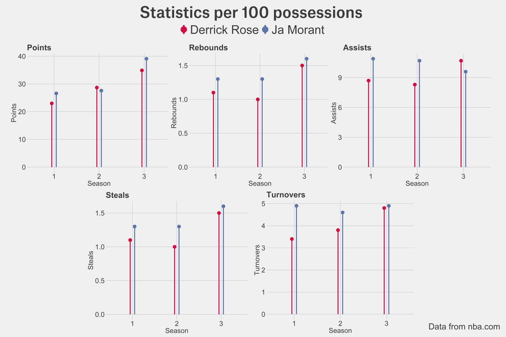

Is pre-injury Derrick Rose back?
By Gonzalo Pato | May 18, 2022

“… We [the Chicago Bulls] are looking to sweep you [the Philadelphia 76ers] guys. You wanted us; you were crying out that you bypassed the harder team in Miami Heat… Uh-oh! Uh-oh! Uh-oh! Rose came down on his left foot, see him? Holding onto his knee and down…”
These words were pronounced by Kevin Harland 10 years ago, and still haunt every Chicago Bulls fan ever since. The Chicago Bulls were beating the Philadelphia 76ers 99-87 with 1.22 minutes left in the fourth quarter (a game they would eventually end up winning 103-91) when Derrick Rose tore his ACL after an injury-provoking landing on his left leg. This was a turning point in the career of the youngest MVP in NBA history, whose game was characterized, until then, by his drives and finishing. Because of these moves and constant hard jumping, Derrick Rose often put a lot of pressure on the joints of his lower limbs, his knees and ankles, which already caused him to miss several games in his fourth season (during the 2011-12 season, before the torn ACL, he only played 39 games out of the 66 games played that season due to injuries). Therefore, this injury, which made him sit out the entire 2012-13 season, was fatal for his career and ended up causing a never-ending list of problems that didn’t allow him to reach his total prime years. And we, the fans, were prevented from one of the most spectacular and probably dominant guards of the NBA’s recent history from reaching his full potential.
Nevertheless, in 2019, the Memphis Grizzlies drafted Ja Morant, an explosive flashy guard out of Murray St. who had just averaged 24.5 points, 6.7 rebounds, and 10 assists during his sophomore season. The most adventurous people foresaw his ceiling as a “lite” version of Russell Westbrook or Mike Conley… but this year people ask themselves if we could be witnessing the healthy version of Derrick Rose. When asked about this in November, Morant said “I definitely see the comparisons, but D-Rose is one of a kind and one special player and you can see the similarities, sure, but there can never be another Derrick Rose. I’m just trying to be my own player and do what I do on the floor and help my teams win basketball games and continue to get better.”
In this article, we will look at the first three seasons of Derrick Rose’s and Ja Morant’s careers and see that, despite Ja’s humbleness, we could be witnessing a “healthy” version of Derrick Rose.
As we can see, both guards have quite similar physical attributes. Morant indeed has the edge with his vertical jump, yet both are quite above-the-average 28’’ jump in the NBA. Moreover, they both have that “alpha-male” attitude which made them thrive as leaders of their respective teams.
His traditional stats per 100 possessions (to adjust for pace and evolution of the game) displayed in the graph below reinforce this claim: on the surface, both players have quite similar stats in every aspect of the game except for points and rebounds (in which Morant performs better), but overall, they have followed the same trend. This difference in points in the third season can be explained by looking at the offensive rating of the teams, as Memphis had an offensive rating of 114.6 while Chicago’s was 108.3. The difference in rebounds is due to the teammates each one had. During Rose’s third season Chicago signed 2x All-Star Forward Carlos Boozer to pair him with Joakim Noah, with each of them grabbing over 15% of the rebounds while there were on the floor. In contrast, Morant only had Steven Adams putting up that kind of numbers.
If we look at the advanced metrics, their true shooting also has had a remarkably similar evolution (always in the 50’s%) reaching 57.5% for Ja Morant’s 3rd season while Derrick Rose’s was at 55%. The same tale can be told in terms of usage percentage, as although Derrick Rose had a lower usage percentage in his rookie season (of 22.6% compared to Morant’s 25.6%), both increased to the low thirties, with 31.4% for Rose and 33% for Morant, giving Ja again the edge.
Their offensive and defensive ratings differ greatly. Derrick Rose has had lower defensive and offensive ratings throughout their first three seasons, but these are directly impacted by the teams: although the Grizzlies’ culture of “grit-n-grind” has still survived to a lesser extent, the 2008-2011 Bulls were a much more defensive-minded team, especially in the 2010-11 season with the appointment of Tom Thibodeau as head coach. Likewise, new advanced metrics that try to account for all in one, like LEBRON and DARKO give them relatively similar stats (two of the three best all-in-one statistics according to NBA General Managers): whereas LEBRON gives the edge to Rose in their third season, with a 3.8 LEBRON (in the 97.6th percentile of the NBA) over Ja Morant’s 3.4 (in the 97th percentile of the NBA), we can see in the plot below how DARKO gives the edge to Morant, also showing that since the game 150 they have followed the same upward trend (even Morant surpassing peak Derrick Rose).
These numbers have been quite impressive and, although Ja has not been able to take his Grizzlies to clinch the conference title as Rose did in 2011, this year’s Grizzlies have tied the 2012-13 Grizzlies for most wins in an NBA season in franchise history.
But what Ja resembles Derrick most is on the offensive side. As Clipper’s Forward Paul George stated in November: “He’s just explosive, electrifying, I’d compare him to like, D-Rose. I guarded him my rookie year, Indy-Chicago, and guarding Ja is very similar to how D-Rose was. It was just how quick and his ability to change direction, move his body in-air…”
Focusing on his offensive game we can look at how their shooting has evolved; both players prefer shooting from close range to three-point land.

There is a clear difference between the two charts because of the number of midrange 2-point shots Derrick Rose attempted (which are minimal in Ja Morant’s shot chart). Nevertheless, this change is due to the NBA’s equivalent of “Moneyball”, as it has been proven that shooting from midrange is not as efficient as shooting threes (unless you are a midrange god, like CP3, KD…). It is safe to bet that if we had rookie Derrick Rose in today’s game, we would see him taking less and less of those “inefficient” midrange 2-point shots and more close-range looks because of the value of those shots hasn’t changed recently.
Likewise, back in the days, the restricted area was collapsed as teams usually played 2-big lineups (like the Bulls with Noah, Boozer, Kurt Thomas, or Taj Gibson) that thrived in the paint, whereas now teams like Memphis play at most 1-big in Steven Adams (with Jaren Jackson or Brandon Clarke as a stretch-fours that barely steps within the three-point line, or even with both in the game).
Expanding on this shot distribution and focusing on both players’ third season, we can see thatthe percentage of points that come from 2-point shots is quite similar for both Rose and Morant and few guards score at the same rate from within the three-point range.
They both like to create their own shots at the same rate, as they both perform equally in terms of the percentage of unassisted field goals and the percentage of points that come from 2-point shots.
It is true that no two players, nor the team each one plays for, are the same. Nevertheless, looking at the type of numbers they put up, how they get them, their leadership instincts, their physical aspects… I believe it is safe to claim that, even though Ja Morant himself didn’t want to take high praise, we should sit back and enjoy because, although no two players are the same, we might be seen the “healthy” version of Derrick Rose.